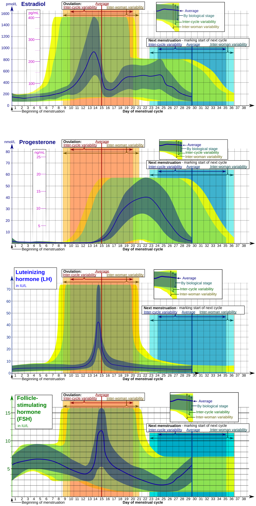

Vượt Ra Ngoài Cơ Quan Sinh Sản: Thụ Thể Hormone Có Mặt Khắp Cơ Thể
Trong sinh học phổ thông, Estrogen và Progesterone thường bị thu hẹp thành "hormone sinh sản" chỉ có vai trò làm dày niêm mạc tử cung và chuẩn bị cho việc mang thai. Tuy nhiên, các nghiên cứu nội tiết phân tử hiện đại (Mauvais-Jarvis et al., 2017) đã chứng minh một bức tranh sinh lý vĩ đại hơn: thụ thể của Estrogen (ERα, ERβ, GPER) và Progesterone (PR-A, PR-B) phân bố dày đặc ở hầu hết mọi cơ quan trọng yếu trong cơ thể nữ giới.
Mỗi tế bào nội mô mạch máu, tế bào tạo xương (osteoblast), tế bào thần kinh vùng đồi hải mã và sợi cơ vân đều mang những chiếc "ăng-ten" thụ thể này. Điều này giải thích vì sao khi tỷ lệ giữa 17β-Estradiol (E2) và Progesterone (P4) thay đổi theo chu kỳ, bạn sẽ cảm nhận rõ rệt sự biến chuyển từ khả năng giữ thăng bằng, độ nhạy insulin, huyết áp, cho đến tâm trạng và cấu trúc giấc ngủ.

Bảng So Sánh Tác Động Toàn Thân Của Estrogen & Progesterone
| Hệ Cơ Quan | Estrogen (Thống Trị Pha Nang Trứng) | Progesterone (Thống Trị Pha Hoàng Thể) | Dấu Ấn Tương Ứng Trên Thiết Bị Đeo (WHOOP / Oura / Apple) |
|---|---|---|---|
| Hệ Tim Mạch & Mạch Máu | Kích thích enzyme eNOS giải phóng Oxit Nitric (NO), làm giãn mạch máu, hạ huyết áp và tăng lưu lượng máu đến cơ bắp. | Làm co nhẹ mạch ngoại vi, cạnh tranh với thụ thể aldosterone ở thận khiến cơ thể bài tiết natri nhiều hơn. | Nhịp tim nghỉ ngơi (RHR) thấp nhất tháng ở tuần Estrogen (52–58 bpm), sau đó tăng vọt +3 đến +7 bpm ở tuần Progesterone. |
| Hệ Thần Kinh Tự Chủ & HRV | Kích thích trương lực Dây thần kinh Phế vị (Vagus Nerve), nâng cao hoạt động của hệ phó giao cảm (Rest & Digest). | Kích hoạt hệ thần kinh giao cảm (Fight or Flight) và trung tâm điều nhiệt tại vùng dưới đồi não bộ. | Chỉ số HRV (RMSSD) đạt đỉnh cao nhất tháng ở ngày 10–13, sau đó giảm 5%–15% trong suốt 14 ngày hoàng thể. |
| Chuyển Hóa & Năng Lượng | Tăng độ nhạy Insulin, tối ưu hóa việc vận chuyển glucose vào cơ bắp để tái tổng hợp glycogen thần tốc. | Làm giảm nhẹ độ nhạy insulin; tăng tốc độ chuyển hóa cơ bản (BMR) thêm 100–250 kcal/ngày; ưu tiên đốt mỡ. | Đốt nhiều calo thụ động hơn khi ngồi nghỉ ở pha hoàng thể; nhưng dễ bị cạn glycogen nhanh hơn nếu tập biến tốc cường độ cao. |
| Cơ Xương Khớp & Dây Chằng | Ức chế hủy cốt bào, bảo vệ mật độ xương; nhưng làm tăng độ mềm dẻo của collagen dây chằng (đặc biệt dây chằng chéo trước ACL). | Thúc đẩy tái tạo mô liên kết, tăng dị hóa protein cơ bắp nếu lượng đạm nạp vào không đủ. | Nguy cơ chấn thương dây chằng khớp gối tăng nhẹ ngay trước rụng trứng khi estrogen đạt đỉnh tối đa. |
| Hô Hấp & Thân Nhiệt | Giữ thân nhiệt cơ bản (BBT) ở mức mát mẻ (36.1°C – 36.4°C); nhịp thở chậm rãi, ổn định. |
Tác động trực tiếp lên trung tâm hô hấp ở hành não, làm tăng thể tích thông khí phút; nâng thân nhiệt thêm +0.3°C đến +0.5°C. | Tần số hô hấp ban đêm tăng thêm 0.5 – 1.5 nhịp/phút trên Apple Health và WHOOP từ sau ngày rụng trứng. |
Cơ Chế Thích Nghi Thiết Bị Đeo: Tại Sao Không Thể Áp Dụng Một Thang Điểm Cố Định?
Một trong những hạn chế lớn nhất của các thuật toán sức khỏe đời đầu (khi chỉ được nghiên cứu trên nam giới) là giả định rằng Nhịp tim nghỉ (RHR) và HRV của một người phải ổn định quanh một đường thẳng suốt cả năm.
Khi áp dụng mô hình đó cho phụ nữ:
- Vào Ngày 22 của chu kỳ, khi Progesterone đạt nồng độ đỉnh (15–25 ng/mL), thân nhiệt tăng và HRV sụt giảm, chiếc đồng hồ thông thường sẽ vội vàng thông báo: "Điểm phục hồi kém! Bạn đang bị quá tải hoặc sắp ốm!".
- Thực tế sinh học hoàn toàn ngược lại: sự sụt giảm HRV này là chứng chỉ sinh học cho thấy hoàng thể đang hoạt động vô cùng sung mãn và khỏe mạnh. Một chu kỳ có progesterone tăng cao là bằng chứng của một chu kỳ có rụng trứng thành công!
Các nền tảng tiên tiến hiện nay (như WHOOP Menstrual Cycle Coaching và Oura Cycle Insights) đã nâng cấp thuật toán: tự động chia đường nền (baseline) thành hai nửa riêng biệt—Đường nền pha Nang trứng và Đường nền pha Hoàng thể—giúp đưa ra lời khuyên tập luyện và nghỉ ngơi chuẩn xác tuyệt đối theo từng ngày nội tiết.
4 Lời Khuyên Khoa Học Để Sống Thuận Theo Bản Giao Hưởng Nội Tiết
- Bảo Vệ Khối Cơ Ở Pha Progesterone Bằng Cách Tăng Đạm: Vì Progesterone kích thích dị hóa protein, hãy tăng lượng đạm nạp vào lên mức 1.6 đến 2.0 gram/kg cân nặng/ngày trong 10 ngày trước kỳ kinh, đồng thời bổ sung thêm axit amin thiết yếu (BCAA/EAA) quanh buổi tập.
- Tận Dụng "Cửa Sổ Vàng" Estrogen Cho Bài Tập Kỷ Lục: Từ ngày thứ 5 đến ngày thứ 13 của chu kỳ, sự dồi dào của estrogen và độ nhạy insulin cao là thời điểm vàng để bạn lập kỷ lục cá nhân (PR) về nâng tạ, chạy nước rút hoặc thực hiện các dự án trí óc đòi hỏi độ tập trung cao độ.
- Bổ Sung Thêm Muối Khoáng & Điện Giải Ở Tuần Hoàng Thể: Do Progesterone ức chế thụ thể giữ muối aldosterone tại thận, cơ thể nữ giới đào thải natri qua nước tiểu nhanh hơn. Hãy uống thêm
300–500 mg Natrihòa cùng nước trước khi tập luyện để chống tụt huyết áp và chuột rút. - Hạ Nhiệt Phòng Ngủ Xuống 18°C Ở Nửa Cuối Chu Kỳ: Để bù trừ cho sự tăng thân nhiệt lõi do progesterone gây ra, hãy điều chỉnh điều hòa mát hơn bình thường 1–2 độ để ngăn chặn tình trạng trằn trọc và thức giấc lúc 3 giờ sáng.
Tài Liệu Tham Khảo & Nguồn Y Khoa
- Mauvais-Jarvis, F., Clegg, D. J., & Hevener, A. L. (2017). The role of estrogens in control of energy metabolism and glucose homeostasis. Endocrine Reviews, 34(3), 309–338. Tạp chí Endocrine Reviews (PMID: 23460719) ↗
- Mendelsohn, M. E., & Karas, R. H. (1999). The protective effects of estrogen on the cardiovascular system. New England Journal of Medicine, 340(23), 1801–1811. Tạp chí NEJM (PMID: 10362825) ↗
- Baker, F. C., Siboza, F., & Fuller, A. (2020). Temperature regulation in women: Effects of the menstrual cycle. Temperature, 7(3), 226–262. Báo Cáo Nghiên Cứu Gốc (NCBI PubMed: 32078800) ↗
- Sims, S. T., Ware, L., & Capodilupo, E. R. (2021). Patterns of endogenous and exogenous ovarian hormone modulation on recovery metrics across the menstrual cycle. BMJ Open Sport & Exercise Medicine, 7(3), e001047. Tạp chí BMJ (PMID: 34367655) ↗